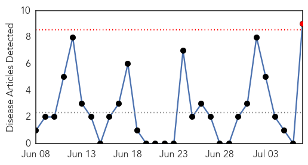
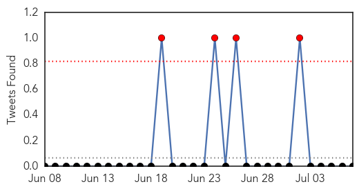
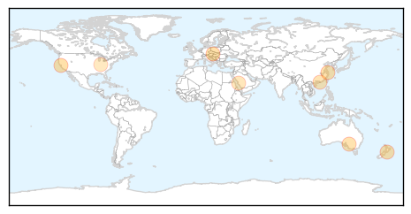
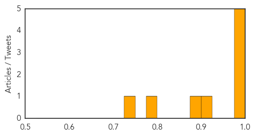
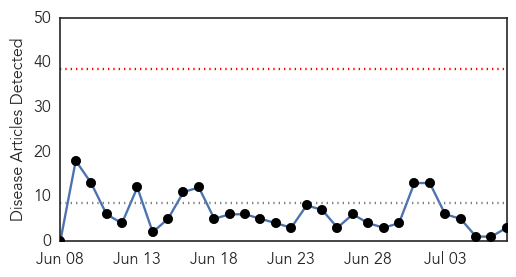
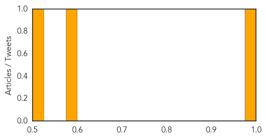

Influenza
30-Day Web Trend
1 alerts, 0 warnings

30-Day Twitter Trend
4 alerts, 0 warnings

Article Locations
Article Confidences
Top Articles:
- 0.997
- Universal vaccine could put brakes on flu
- 0.988
- 50 Member States meet to discuss influenza surveillance
- 0.986
- Chlamydia incidence higher than flu in Halton in 2013
- 0.977
- No poultry contact in some China bird flu cases
- 0.975
- Deadly influenza strain back with a vengeance
- 0.924
- Predict mutants to create universal flu vaccine
- 0.877
- Taiwanese health officials confirm two additional lab cases of avian flu
- 0.799
- Pilgrims urged to take vaccinations before going to Mecca
- 0.728
- Patient choice and hospital capacity during a pandemic
Top Tweets:
-
No tweets found for Jul 07, 2014
Measles
30-Day Web Trend
0 alerts, 0 warnings

30-Day Twitter Trend
0 alerts, 0 warnings

Article Locations

Article Confidences
Top Articles:
Top Tweets:
-
No tweets found for Jul 07, 2014